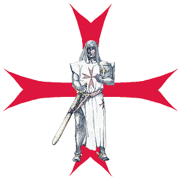
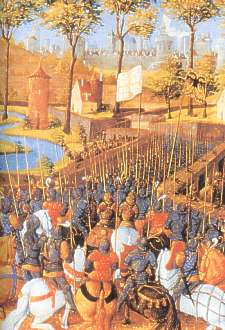

A CRUZADA
GUERRA E FLAGELO DA FOME
Atendendo a um chamado do
Imperador Frederico II, que quis empreender uma expedição guerreira a Itália, em
1226, ele, o Landgrave Luís com seus soldados atravessou os Alpes em companhia
do Imperador rumo ao solo italiano. Todavia, apenas o Duque Luís partiu para a
missão, uma grande fome assolou a Alemanha, principalmente a Thuríngia. O povo
chegou ao extremo da miséria, com uma fome violenta. Os mais pobres saíam à
procura de raízes, frutas agrestes e até pasto de animais, para matar a fome,
que era muito grande, pois no campo e no comércio não havia quase nada para se
comer.
A vista de tantas misérias,
Isabel ficou sensibilizada e decidiu socorrer todos aqueles infelizes. Seu
Castelo se tornou o centro de uma caridade sem limites. Havia muito dinheiro no
tesouro Ducal em face da venda de diversas concessões, e a Duquesa não teve
dúvidas de distribuí-lo criteriosamente, aos indigentes. Depois, mandou abrir os
celeiros, cheios do melhor trigo, e da mesma forma, regulou as doações, a fim de
que todos fossem atendidos, socorrendo mais de 900 pessoas durante um bom tempo.
O Duque quando chegou, o
administrador do Castelo e diversos cortesãos vieram reclamar com ele. Luis
respondeu:
- "Deixai minha
boa Isabel dar quantas esmolas lhe aprouver, ninguém a contrarie o que ela fizer
pelos necessitados".
AMOR MATERNO
Isabel havia fundado um asilo
particular para os meninos órfãos, e ela tratava todos com muita ternura, como
se fossem seus próprios filhos. As crianças ficavam muito felizes e na
realidade, criança não se esquece do bem que lhes fazem. E assim, apenas
avistavam a chegada da Duquesa, corriam ao seu encontro chamando
"Mamãe Isabel, mamãe Isabel"
. E ela também, sentia feliz de observar aquele
carinho espontâneo das crianças.
CORAÇÃO DILACERADO

Os muçulmanos infiéis ocuparam na
Palestina (Israel) os lugares sagrados do cristianismo, onde NOSSO SENHOR viveu
e nos redimiu, não permitindo que os cristãos os visitassem. Cresceu e evoluiu
vigorosamente um sentimento valoroso em todos que amavam DEUS, com o objetivo de
arrancar mesmo que fosse a força, aquela raça que tripudiava sobre os cristãos,
e para isto foi formado um grande exército, as "Cruzadas", para expulsar os
infiéis daqueles lugares tão sagrados. E o Luís, Duque da Thuríngia, esposo
de Isabel, não ficou indiferente a aquela realidade, e como bom cristão que
era, se enfureceu e decidiu se juntar à força do exército da cristandade.
Recebeu a "CRUZ VERMELHA"
das mãos do Bispo Hildesheim e fez voto de se
reunir com seus soldados, a expedição que o Imperador Frederico II preparava em 1227.
Entretanto, voltando ao seu
Castelo de Wartburgo, ficou pensando na imensa dor que sentiria Isabel, e não
teve animo de mencionar o assunto a sua esposa. Todavia, numa tarde em que os
dois estavam sozinhos, sentados bem ao lado, um do outro, num momento de ternura
e íntima familiaridade, Isabel enfiou a mão na bolsa do Luís, que pendia do
cinturão, para ver o que nela havia. E o primeiro objeto que encontrou e tirou,
foi exatamente a "CRUZ VERMELHA"
que identifica os Cruzados. Imediatamente
compreendeu a desgraça que ameaçava e esmagada pela dor e terror, caiu por
terra sem sentidos.
RESIGNAÇÃO
O Duque consternado ergueu a
esposa e procurou lhe recobrar os sentidos, acalmando sua dor com palavras
meigas e afetuosas. Depois disse:
- "Isabel,
é pelo amor de NOSSO SENHOR JESUS CRISTO que me alistei entre os Cruzados. Não
hás de querer me impedir de fazer por DEUS, uma coisa que seria obrigado a fazer
por um Príncipe temporal, pelo Imperador e pelo Império, se eles exigissem".
Após um longo silêncio e
copiosas lágrimas, Isabel falou:
- "Caro irmão,
caso não seja contra a vontade de DEUS, fica comigo".
Luis falou:
- "Minha irmã,
foi um voto que fiz a DEUS, deixe-me partir".
Isabel respirando fundo assumiu
o sacrifício e disse:
- "Pois bem, não
quero ser contra a Vontade de DEUS, por isso não quero te reter. DEUS te conceda
a graça de fazer em tudo a Suprema Vontade DELE. Eu farei a DEUS o meu
sacrifício por ti e por mim mesma".
Em silêncio os dois ali
permaneceram algum tempo e, depois se levantaram, se abraçaram carinhosamente e
voltaram ao Castelo.
DESPEDIDA
O Duque não tendo mais motivos
para ocultar o fato, fez a notícia chegar aos seus súditos. Depois de
providenciar os preparativos militares que o projeto exigia, convocou os
príncipes, barões e outros senhores, seus vassalos, para uma assembléia solene
em Kreusburgo. Ali, expôs a resolução de partir para o Oriente, em honra de
DEUS, e pela salvação da sua alma, a fim de acudir em auxílio da cristandade na
Terra Santa. Exortou-os a governarem o povo com doçura e equidade, fazendo
reinar a justiça e a paz entre todos. Em seguida, visitou e se despediu dos
monges, todos que eram seus amigos, nos diversos Conventos em Eisenach.
Terminada as despedidas, permaneceu no Palácio ultimando as derradeiras
providências.
LOCAL DO ENCONTRO

O Duque designou Schmalkalde,
onde os militares deviam se reunir no dia de São João Batista para a viagem a
Terra Santa. Luís abençoou os seus dois irmãos e, sobretudo, recomendou a
Henrique Raspon, o mais velho, que cuidasse especialmente da sua mãe Sofia, da
sua esposa Isabel e dos seus filhos. Depois se despediu da sua mãe e dos seus
dois filhos. Quando se voltou para Isabel que estava grávida do terceiro filho,
os soluços e as lágrimas sufocaram a voz dos dois, num carinhoso e longo abraço
de despedida.
E do mesmo modo que o Duque se
despedia dos seus familiares, os outros militares que iam viajar, também se
despediam das suas famílias, das esposas, dos filhos e dos parentes. Foi uma
cena triste e comovente. A dor da separação era muito grande para todos, por que
na verdade, a guerra é sempre uma incógnita, não permite ninguém sonhar que será
fácil ultrapassar todos os obstáculos de uma missão armada e voltar herói e
sorridente para casa, ou seja, considerando que seria uma vitória certa sem
problemas. Todavia, sabemos que não é assim, e por isso mesmo, uma imensa
comoção envolvia a todos e as lágrimas umedeciam todas as faces.
Afinal, o Duque teve forças para
dar o último adeus aos seus entes queridos e alcançar o seu cavalo, ao mesmo
tempo em que deu a ordem de partida, mas Isabel também montou o seu animal e
caminhou a seu lado.
Chegados à fronteira do país,
ela não teve forças para se separar do marido, e então, caminhou mais um dia com
ele, depois outro dia vencida e arrastada pela dor da saudade e pela grandeza do
amor que os unia. No fim do segundo dia, não sabia se devia deixá-lo ou ir com
ele a Terra Santa. Luís chorava e não dizia uma palavra. Mas, Isabel tinha que
ceder, o dever de mãe, a obrigação de educar os filhos e de empunhar as rédeas
do Governo falaram mais alto, e acabaram por vencer. Por isso, ela resolveu
voltar. Também Vargila, o cavalheiro fiel que sempre a protegeu, aproximou-se do
Duque e disse:
- "Senhor, é
tempo. Deixe regressar a senhora Duquesa. O dever exige que seja assim".
Os dois esposos romperam de novo
em grande pranto e se abraçaram com tanto fervor, que comoveu a todos que
estavam próximos. Não foi fácil ao senhor Vargila conseguir que Luís afinal se
vencesse e desse o sinal de partida. Num derradeiro adeus, Luís mostrou a esposa
um anel que trazia no dedo, o qual lhe servia de sinete para as cartas secretas,
e lhe disse:
- "Caríssima irmã
Isabel! Vê este anel, no qual está gravado sobre uma pedra safira, o Cordeiro de
DEUS com seu estandarte, é um sinal seguro de tudo que se refere a mim. Aquele
que te trouxer um escrito chancelado com ele e te contar que eu estou vivo ou
morto, pode acreditar em tudo o que ele lhe disser. O SENHOR te abençoe, querida
Isabel, irmã minha muito amada, meu rico tesouro. DEUS Todo-poderoso guarde tua
alma e seja a tua fortaleza! Jamais esqueças de mim em tuas orações! Adeus!"
E partiu o nobre cruzado
deixando a esposa nos braços de suas damas.
Isabel de volta ao Castelo de
Wartburgo, muito triste e desolada, depôs imediatamente as vestes reais,
vestindo trajes de viúva, permanecendo solitária e inconsolável, durante vários
dias. Ocupava-se inteiramente de DEUS, fazendo obras de caridade e de
misericórdia, cada vez melhores.
SEGUINDO A VIAGEM
 O Duque Luis partiu com um
esplêndido séquito de duzentos cavaleiros, cheios de ideal para reconquistar o
Santo Sepulcro, que estava ocupado pelos muçulmanos infiéis. Quando chegou a
Itália, foi recebido com grandes honras pelo Imperador Frederico, que logo admitiu
a presença de Luís a conferência secreta que deliberava acerca do plano da
expedição. O Imperador fez-se acompanhar por ele à Ilha de Santo André, onde se
realizou a assembléia, por que o Landgrave da Thuríngia lhe inspirava bastante
confiança.
O Duque Luis partiu com um
esplêndido séquito de duzentos cavaleiros, cheios de ideal para reconquistar o
Santo Sepulcro, que estava ocupado pelos muçulmanos infiéis. Quando chegou a
Itália, foi recebido com grandes honras pelo Imperador Frederico, que logo admitiu
a presença de Luís a conferência secreta que deliberava acerca do plano da
expedição. O Imperador fez-se acompanhar por ele à Ilha de Santo André, onde se
realizou a assembléia, por que o Landgrave da Thuríngia lhe inspirava bastante
confiança.
Entretanto, no seio de diversas
tropas, vindas de regiões frias e não acostumadas com o grande calor,
principalmente aquele do verão italiano que é muito quente, desenvolveu-se em
várias tropas uma doença contagiosa que vitimou grande número de cruzados. E
para sua preocupação, na Ilha de Santo André ele sentiu os primeiros indícios da
moléstia. Todavia, embarcou com o Imperador para Otranto, onde se encontrava a
Imperatriz Yolanda esposa do Imperador Frederico. Visitou-a com grande respeito,
mas fisicamente começou a sentir uns arrepios. A febre chegou firme e com grande
violência, por isso, com dificuldade ele alcançou o seu navio, onde foi obrigado
a se recolher ao leito.
Convocou os médicos da região e
reconhecendo a gravidade do seu estado, e não havendo remédios que pudessem
ajudá-lo, ditou o seu testamento e mandou chamar o Patriarca de Jerusalém, que
lhe administrou os últimos Sacramentos. Depois de receber a Sagrada Comunhão,
encarregou uns cavalheiros de anunciar a sua morte à sua família e entregar a
sua esposa, o anel com o Cordeiro de DEUS.
Minutos antes de expirar,
exclamou:
- "Vede, vede,
esses pombos mais brancos que a neve!"
As pessoas presentes julgaram
que ele estivesse delirando, mas Luís ainda falou:
- "Cumpre que eu
voe com esses pombos radiantes!"
A seguir, sua alma partiu para a
eternidade. Era o terceiro dia depois da Festa da Natividade de NOSSA SENHORA no
dia 8 de Setembro do ano 1227. Luís morreu com apenas 27 anos de idade.
POBRE CORAÇÃO
Os cavalheiros encarregados pelo
Duque Luís chegaram a Thuríngia para anunciar a sua morte quando Isabel acabava
de dar a luz ao terceiro filho, uma menina bem bonita. A conselho de homens
prudentes, a notícia não foi transmitida à viúva. Sofia, sua sogra, deu ordens
severas à criadagem para que ninguém levasse a Isabel a notícia da morte do seu
esposo.
Passado o tempo de resguardo,
era necessário comunicar o fato à viúva. Assim, Sofia, acompanhada de algumas
damas nobres e discretas, reuniram-se com a nora nos aposentos dela e lhe
contaram o desfecho terrível da expedição, entregando-lhe o anel de Luís,
dizendo:
- "Minha
filha, resigna-te e recebe este anel que ele te mandou, pois infelizmente Luís
morreu".
- "Ah! Senhora,
o que dizeis?" Exclamou Isabel.
- "Morreu
Isabel! Luís morreu!"
Com as mãos no rosto, ergueu-se
desvairada e pôs-se a correr com todas as suas forças através das salas e
corredores do Castelo, gritando:
- "Morreu,
morreu, meu querido Luís morreu!"
Só parou na sala de jantar, de
encontro a uma parede, onde ficou pregada, chorando e banhada em lágrimas. Foi
uma grande tristeza. Ela estava tão desequilibrada emocionalmente que desmaiou,
caindo ao chão. Vieram as criadas e quiseram conduzi-la ao seu quarto. Isabel
deixou-se arrastar cambaleando, em profunda depressão nervosa, tendo permanecido
chorando por longo tempo.

 PRÓXIMA PÁGINA
PRÓXIMA PÁGINA
PÁGINA ANTERIOR
RETORNA AO ÍNDICE